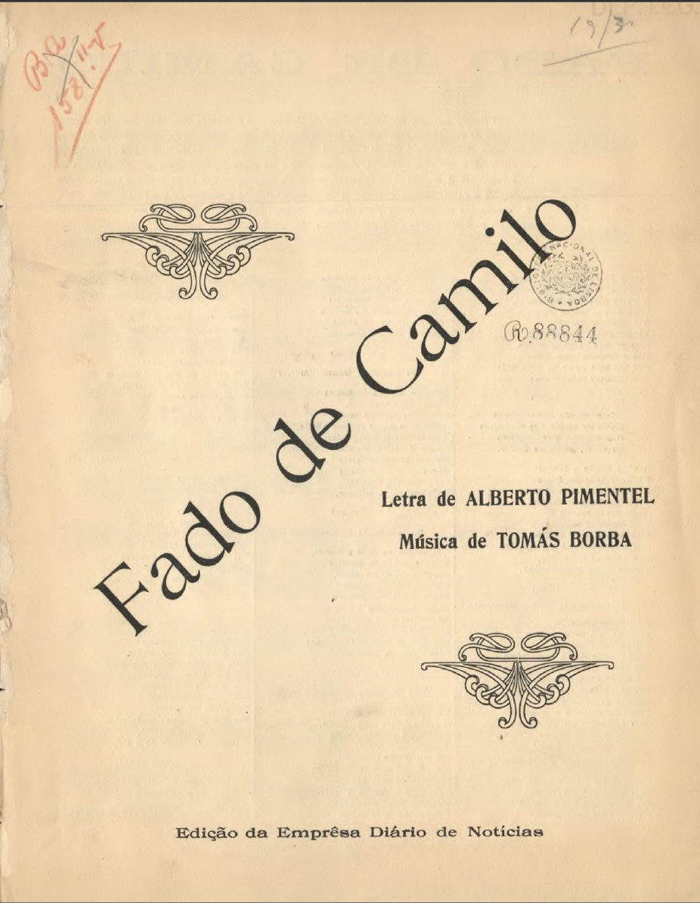
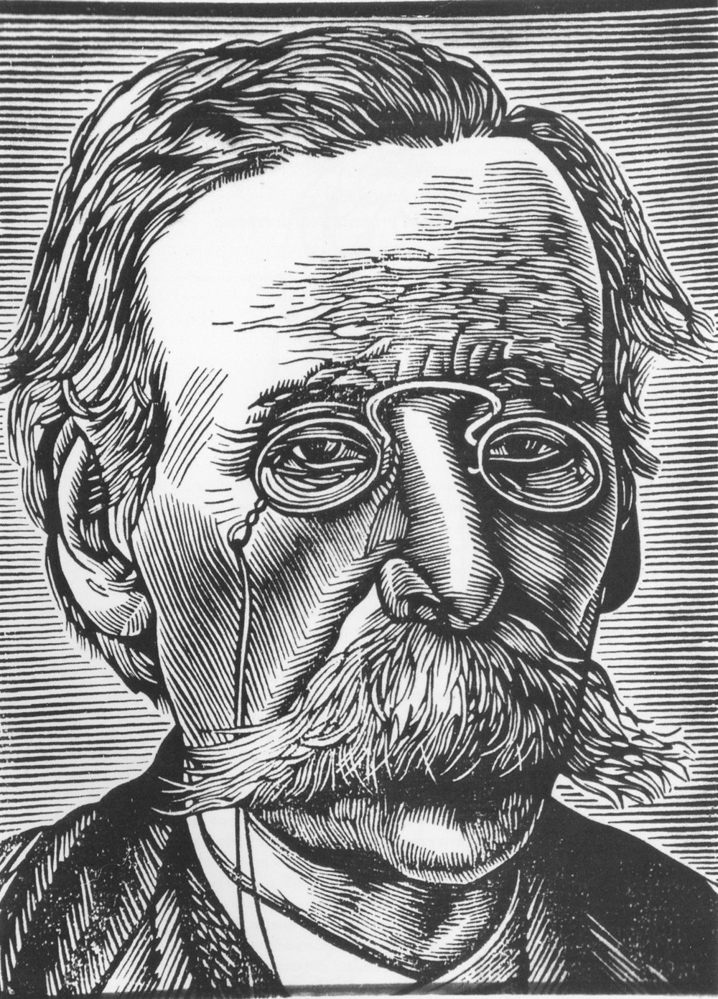
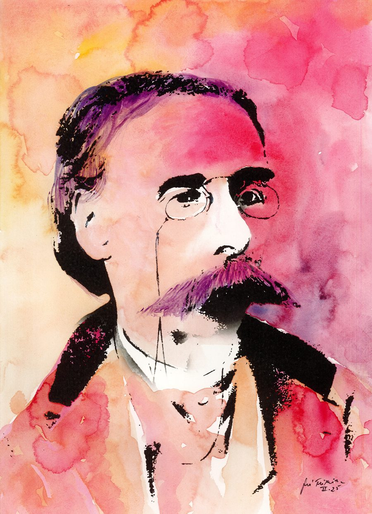

Apresentação
Colóquio integrado no projeto "Camillo e a Música" · Bicentenário de Camilo Castelo Branco
Colóquio
Datas: 27 e 28 de novembro de 2026
Local: Universidade do Minho, Edifício dos Congregados (Av. Central, 100), Braga
Organização: CEHUM · ELACH · Universidade do Minho
O Colóquio "Camilo em Texto e Música" é dedicado à relação entre o escritor português e a música e insere-se no projeto "Camillo e a Música" da Câmara Municipal de Braga, em parceria com a Câmara Municipal de Cabeceiras de Basto, a Câmara Municipal de Vila Real e a SUONART — Associação Cultural. Além do Colóquio, o projeto inclui uma exposição, vários concertos e tertúlias em torno de Camilo nas três cidades.
Camilo Castelo Branco, figura central da literatura portuguesa, estabeleceu um diálogo constante com a música. Para além de ter uma formação musical básica, tocava guitarra, era um apreciador de fados e exerceu a atividade de crítico musical, na qual imprimiu o seu testemunho e comentários sobre episódios do teatro lírico no contexto sociocultural portuense, a partir dos espetáculos levados à cena no Teatro de São João, entre 1849 e 1858.
Foi amigo do compositor e violinista virtuoso Francisco de Sá Noronha, que lhe dedicou uma Fantasia sobre temas da ópera La Traviata, de Verdi. Inspirados pela obra de Camilo, Alfredo Keil compôs a ópera A Serrana (1899) e João Arroio a ópera Amor de Perdição (1907). Os seus textos inspiraram diversos compositores, no decorrer dos séculos XIX e XX, e em tempos hodiernos, como António Emiliano e Fernando Lapa.
É essa estreita e rica relação de Camilo Castelo Branco com a música que será evidenciada neste Colóquio, através da participação de especialistas na área da Musicologia, da História e da Literatura.
Programa
Sexta-feira, 27 de novembro de 2026
Universidade do Minho · Edifício dos Congregados
| Hora | Conferencistas | Título | Moderação |
|---|---|---|---|
| 11:00 | AberturaVítor Moura (Diretor do CEHUM), Elisa Lessa, Vítor Matos (Departamento de Música), Catarina Miranda (Vereadora da Cultura) | ||
| 11:30 | Cândido Oliveira Martins | Música em Camilo Castelo Branco: práticas e comicidade no teatro social da ficção humorística | Elisa Lessa |
| 12:15 | Mesa-redondaElisa Lessa, Rodrigo Teodoro de Paula, Rui Magno Pinto | Camilo e a Música: um projeto em curso | |
| 13:00 | Pausa para almoço | ||
| 15:00 | Luciene Pavanelo | A quebra da catarse em "O Que Fazem Mulheres", de Camilo Castelo Branco | Elisa Lessa |
| 15:30 | César Viana | Cinco obras virtuosísticas para violino de Francisco de Sá Noronha: fontes, interpretação e orquestração | Elisa Lessa |
| 16:00 | Bárbara Carvalho Manuel Deniz Nicholas McNair Cesário Costa |
A música de Armando Leça para o filme Amor de Perdição (1921), de Georges Pallu | Rui Magno Pinto |
| 16:50 | Pausa para café | ||
| 17:10 | Catarina Braga | Camilo em cena: a música de João Rodrigues Cordeiro e José Maria de Carvalho para as comédias de Camilo Castelo Branco | |
| 17:30 | Pedro Maia | A propósito d'O Processo de Camilo — música para a peça de teatro "Camilo e Ana Augusta", de Artur Costa, por Pedro Junqueira Maia | Elisa Lessa |
| 18:10 | Fim da sessão | ||
Sábado, 28 de novembro de 2026
Universidade do Minho · Edifício dos Congregados
| Hora | Conferencista | Título | Moderação |
|---|---|---|---|
| 10:00 | Nuno Resende | "Corografia sentimental": fontes, método e arquitectura de um dicionário camiliano | Elisa Lessa |
| 10:40 | Luísa Cymbron | O ambiente musical do Porto no tempo de Camilo | Rui Magno Pinto |
| 11:20 | Pedro Couto Soares | Música e teatro na obra de Camilo: entre o folhetim e a ficção | Rui Magno Pinto |
| 12:00 | Rui Vieira Nery | A Ópera como espaço de sociabilidade da elite portuense: Camilo como crítico musical | Rodrigo Teodoro de Paula |
| 12:40 | Encerramento | ||
Conferencistas
Bárbara Carvalho
Cândido Oliveira Martins
CEFH · Universidade Católica
Catarina Braga
CESEM · Universidade Nova
César Viana
CEHUM · Universidade do Minho
Cesário Costa
CESEM · Universidade Nova
Luciene Marie Pavanelo
Universidade Estadual Paulista
Luísa Cymbron
CESEM · Universidade Nova
Manuel Deniz Silva
INET-md · Universidade Nova
Nicholas McNair
CESEM · Universidade Nova
Nuno Resende
Universidade do Porto
Pedro Couto Soares
CESEM · Universidade Nova
Pedro Junqueira Maia
Universidade do Minho
Rui Vieira Nery
Universidade Nova · Fundação Gulbenkian
Inscrições
A participação no Colóquio "Camilo em Texto e Música" requer inscrição prévia, através do formulário abaixo.
27 e 28 de novembro de 2026 · Universidade do Minho, Edifício dos Congregados
Preencher o formulário de inscriçãoO formulário abre numa nova janela (Microsoft Forms).
Exposição "Camillo e a Música"
Inauguração a 28 de novembro de 2026, às 15h00 · Casa dos Crivos, Rua de S. Marcos, Braga
Uma visita em torno da relação de Camilo Castelo Branco com a música do seu tempo, explorando a presença da arte musical na sua vida, na sua obra literária e no contexto cultural do século XIX. Os textos de Camilo constituem testemunhos relevantes da vida musical oitocentista, permitindo conhecer práticas, ambientes, repertórios e sensibilidades de uma época em que a música ocupava um lugar significativo na sociabilidade e na expressão artística.
A exposição dá igualmente a conhecer um conjunto significativo de repertório musical inspirado na obra e/ou na figura de Camilo Castelo Branco, evidenciando a vitalidade da sua criação literária enquanto fonte de inspiração para compositores. De modo particular, constrói uma narrativa que aproxima Camilo de três cidades — Braga, Cabeceiras de Basto e Vila Real —, articulando lugares, memórias, referências literárias e património musical.



Painéis
I O Fado de Camillo
II A Formação Musical de Camillo
III Em Casa de Camillo: Ecos Musicais de Seide
IV Crónicas Musicais de Camillo I
V Crónicas Musicais de Camillo II
VI A Amizade entre Camillo e Sá Noronha
VII Camillo em Canção I
VIII Camillo em Canção II
IX Camillo em Música. Obras Orquestrais
X Do Romance à Ópera I
XI Do Romance à Ópera II
XII A Música em Cena — Teatro e Cinema
XIII A Música na Literatura Camiliana I
XIV A Música na Literatura Camiliana II
XV Memórias de uma geografia musical
- Braga
- Cabeceiras de Basto
- Vila Real
Curadoria
- Elisa Lessa, Rodrigo Teodoro de Paula e Rui Magno Pinto
Universidade do Minho
Colaboração
- Inês Tavares
Doutoranda em Ciências da Cultura · ELACH, Universidade do Minho - Inês Rocha
Mestre em Música (Ciências Musicais) pela Universidade do Minho - Afonso Machado, Carolina Zueco, Cátia Pires, Clara Costa, Diana Silva, Israel Silveira, Luana Fonseca, Mariana Couto, Marta Parente e Pedro Meireles
Estudantes da Licenciatura em Música — Ciências Musicais · Departamento de Música, ELACH
Artes visuais
- José Teixeira
Pinturas "Declinações a cores" · ELACH, Universidade do Minho - Patrícia Ferreira
Ilustradora e artista plástica - Rui Mesquita, João Paulo Braga e António Lobato Costa
Agradecimentos
- Conselho Cultural — Reitoria da Universidade do Minho
Manuela Ivone Cunha - Biblioteca Pública de Braga
Márcia Carolina Ferreira Oliveira · Elisabete Pinto Lago - Câmara Municipal de Vila Nova de Famalicão
- Casa-Museu de Camilo — São Miguel de Seide
Sérgio Guimarães de Sousa, Diretor da Casa-Museu e Coordenador Científico do Centro de Estudos Camilianos
O projeto "Camillo e a Música"
O projeto "Camillo e a Música" é uma iniciativa cultural que explora e valoriza a dimensão musical da vida e obra de Camilo Castelo Branco (1825–1890), no contexto das comemorações do seu bicentenário. Esta proposta multidisciplinar articula investigação académica, produção cultural e divulgação patrimonial, criando uma rede de cooperação entre três municípios com ligações históricas significativas ao escritor: Braga, Vila Real e Cabeceiras de Basto.
O projeto, coordenado pela Professora Elisa Lessa, tem como objetivo dar a conhecer a relação entre o escritor e a música, promovendo o conhecimento sobre esta dimensão da sua vida e obra, e contribuir para a valorização do património cultural português através de uma abordagem territorial integrada.
Organização do Colóquio
Comissão Científica
- Elisa Lessa
Coordenadora · CEHUM, Universidade do Minho - Rodrigo Teodoro de Paula
CESEM / CEHUM - Rui Magno Pinto
CESEM
Comissão Organizadora
- Alexandre Gonçalves
Doutorando em Ciências da Cultura · CEHUM - Dora Rodrigues
Doutoranda em Ciências da Cultura · CEHUM - Inês Tavares
Doutoranda em Ciências da Cultura · CEHUM - Miguel Gomes
Doutorando em Ciências da Cultura · CEHUM - Rui Brito
Doutorando em Ciências da Cultura · CEHUM
Parceiros
Câmara Municipal de Braga · Câmara Municipal de Cabeceiras de Basto · Câmara Municipal de Vila Real · SUONART — Associação Cultural · Departamento de Música da ELACH
Apoio
CCDR NORTE